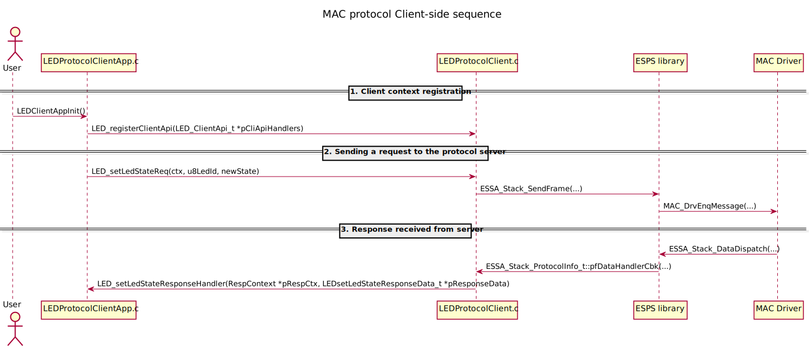

Generated Output for the C generator
The C generator is creating the source files necessary to interact with the ESPS I Stack implementation. The code could be integrated with, for example, the EnduroSat's OBC Starter Kit out of the box. But it can also be used with any module programmed in C that uses the ESPS I Stack library.
File structure
The FP layer implementation is divided into logical groups of files as explained in the table below (ProtocolName shall be replaced with the respective interface name as given in the Franca IDL description):
| Package | File name | Description |
|---|---|---|
| Client app | ProtocolNameClientApp.c | FP wrapper where the client code has to be implemented by the end user |
| Server app | ProtocolNameServerApp.c | FP wrapper where the server code has to be implemented by the end user |
| Client-side | ProtocolNameProtocolClient.c | Fully generated client-side implementation of the protocol:
|
| ProtocolNameProtocolClient.h | Client-side header file included by the client app | |
| Server-side | ProtocolNameProtocolServer.c | Fully generated server-side implementation of the protocol:
|
| ProtocolNameProtocolServer.h | Server-side header file included by the server app | |
| ProtocolServerCommon.c | Common functions shared between all the servers in the system (currently contains a method to send standardized error frames in case of failed function verification) | |
| ProtocolServerCommon.h | A header files with public common server functions | |
| Protocol-specific headers | ProtocolNameProtocolTypes.h | Contains the definitions of all protocol-specific types shared between client and server protocol implementations |
| Common protocol headers | BaseProtocolTypes.h | Contains the definitions of common types shared between client and server protocol implementations |
This diagram shows an overview of the file dependencies in the generated output:
Class diagram
The code generation uses Xtend templates written for the C language but the produced output follows an initial design described below on a high level.
For this Interface example:
1 2 3 4 5 6 7 8 9 10 11 12 13 14 15 16 17 18 19 20 21 22 23 24 25 26 27 28 29 30 31 32 33 34 35 36 37 38 39 40 | |
We will obtain the following class dependencies:
| Class | Responsibility |
|---|---|
| LEDClientApp |
|
| LEDProtocolClient |
|
| LEDProtocolServer |
|
| LEDServerApp |
|
| ProtocolServerCommon |
|
Sequence diagrams
The diagrams below represent the sequence of sending and receiving messages to and from the ESPS I.
Note
There are references to the ESSA_Stack in the diagram. This is just a deprecated name for the ESPS I Stack. They are equivalent.
Client-side: 
Server-side: